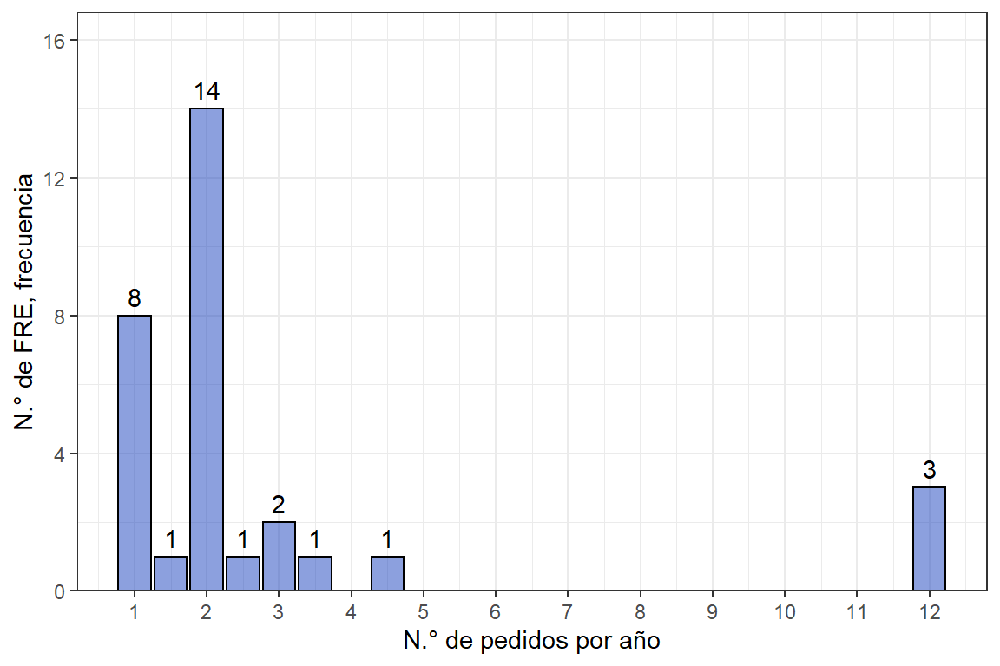
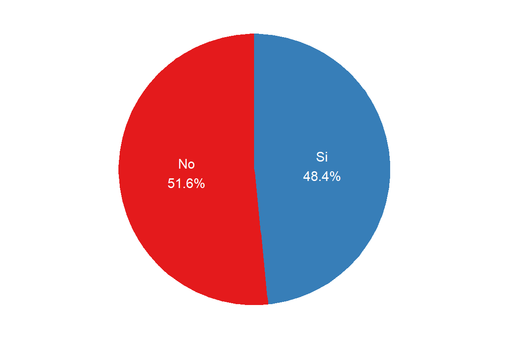

6.1 Inventarios
El manejo de inventarios es de gran relevancia para las organizaciones que tienen bienes tangibles dispuestos a la venta como lo son los FRE. Los inventarios son necesarios debido a la presencia de incertidumbres relacionadas a la demanda de los productos, tiempos de demora en el reabastecimiento, suministro por parte de los proveedores (p.ej. FNE), precio de los medicamentos, cambios en el personal, tiempos de tránsito, entre otros factores32.
En la selección del tamaño de inventario a mantener se contraponen varios tipos de costos33:
Costo de mantenimiento de inventario (lleva a reducir el inventario): compuesto por el costo de capital (relacionado a la pérdida de oportunidad de invertir dinero en inventario en vez de una alternativa con más rentabilidad), costos por almacenamiento (p.ej. arriendo, servicios públicos, o seguros), costos de empleados (p.ej. mantenimiento, administración, alistamiento o auditoría), costos por servicios (seguros, seguridad privada, software de administración de inventario), costos de riesgo de inventario (depreciación, vencimientos, contracción de la demanda).
Costo de pedido (lleva a aumentar el inventario): costos por ordenes de compra (relacionados a la cotización, preparación de órden de compra, tiempo de recepción técnica, pagos), y costos por personal relacionado a la compra.
Costos por desabastecimiento (lleva a aumentar el inventario): relacionado al nivel de servicio, entendido como la probabilidad deseada de no tener un desabastecimiento durante el reabastecimiento de los productos (de manera que se pueda cumplir con las demandas de los usuarios en todo momento)33.
6.1.1 Control de inventarios
La implementación de un software de manejo de inventarios o en el mejor de los casos de un ERP (Enterprise Resource Planning) mejora la capacidad de manejar los inventarios, disminuye costos relacionados a inventario y brinda oportunidad para la coordinación29. Se indago a los FRE sobre las herramientas que tienen a disposición para el manejo de inventarios de MME. La mayoría de los FRE realizan el seguimiento de inventarios mediante un paquete ofimático con una proporción de 45.2% (ver Figura 6.1), siendo la herramienta principal Excel, con uso especial de hojas estandarizadas, como en el caso de los FRE Boyacá, Cauca, Sucre, entre otros.
Figura 6.1: Herramientas en el manejo de inventarios.

Algunos FRE se apoyan en otras herramientas además del paquete ofimático para llevar a cabo la tarea del control de inventarios. En la segunda posición de la Figura 6.1 se observa el uso de software en una proporción del 38.7%. La elección del software se hace según los criterios de cada entidad territorial en la mayoría de los casos se utiliza un software interno de la gobernación del territorio para el desarrollo de estas actividades como es el caso de los FRE Atlántico, Cesar, Santander, entre otros.
El alcance del software es distinto, por ejemplo, el caso del FRE Risaralda que hace uso del software SIMEC para soportar tanto el manejo de inventarios, como los procesos relacionados con el sistema de IVC en todo lo relacionado con MME. Este software funciona además como medio de comunicación entre el FRE y todos sus inscritos, mostrándose como una plataforma muy completa y eficiente, sin embargo, existe poca disponibilidad de equipos de cómputo en el FRE que impide que más personal pueda acceder al software y a sus herramientas por lo cual puede ser un recurso subutilizado.
Se evidencia que algunos FRE poseen herramientas completas para el manejo de sus procesos, mientras que otros realizan el manejo de inventarios apoyándose en el uso de herramientas manuales (32.3%), como se indica en la Figura 6.1 En muchos FRE el control de inventarios de forma manual se realiza con apoyo de herramientas ofimáticas como Excel.
Sólo en tres casos se encontró que el control de inventarios dependía exclusivamente de herramientas manuales como la revisión de libros contables. Pese a que no es el ideal algunos territorios, especialmente los menos centralizados (p.ej. Amazonas y La Guajira), se ven en la necesidad de llevar sus procesos de esta forma debido a la no disponibilidad de equipos de cómputo o que sí bien los hay, esto se encuentran obsoletos y no soportan el uso de tecnologías más recientes y apropiadas.
Finalmente, el manejo de inventarios por parte de los FRE deja en evidencia las brechas tecnológicas importantes entre los territorios. Los FRE menos centralizados presentan menor acceso a tecnologías actualizadas y en estos fue común encontrar la necesidad de acceso a más equipos de cómputo que le permita al personal desarrollar las actividades para el funcionamiento del FRE.
Por todo esto se recomienda el uso de herramientas informáticas para la trazabilidad del inventario.
6.1.2 Comportamiento de compra de FRE
De forma ideal se debería tener en cuenta el balance entre los costos de mantenimiento de inventario y los costos de realizar pedidos para encontrar una cantidad económica de pedido (\(\mathrm{EOQ}\), Economic Order Quantity). Para realizar una programación de compras anuales se debería tener en cuenta la demanda anual del producto y dividirla entre \(\mathrm{EOQ}\), de esta manera se puede encontrar el número de pedidos óptimos29.
El número de pedidos (compras) de MME al FNE en el año también depende de varios factores como: (a) cantidad requerida de estos bienes por cada departamento (demanda), (b) presupuesto asignado por las gobernaciones a los FRE y (c) capacidad de satisfacer la demanda de los medicamentos por parte del FNE (ver Figura 6.2).
Los FRE con demandas pequeñas de medicamentos, como es el caso de Choco, Guainía y Amazonas, la compra se hace una vez al año, a menos que enfrenten casos de desabastecimiento por causas fortuitas como lo fue la situación de Emergencia Sanitaria por la pandemia de coronavirus. Los departamentos con mayor población y necesidad de medicamentos se ven en la obligación de realizar varias compras en el año como es el caso del departamento de Antioquia cuya intención es realizar compras proyectando un abastecimiento de tres meses, sin embargo, manifiesta que el proceso se ve entorpecido por el bajo nivel de servicio relacionado a la disponibilidad de medicamentos en el FNE que le permitan satisfacer su demanda. Se presenta un caso similar para el FRE Santander, donde también afirman que la disponibilidad de medicamentos por parte del FNE es muy poca para cubrir la demanda de su departamento, por lo que obligatoriamente deben autorizar a las IPS y demás a hacer compras directas al FNE.
Por otra parte, hay departamentos donde la frecuencia de las compras y las cantidades de esta depende del presupuesto asignado por la gobernación, como es el caso de Guainía y Putumayo, este último indica que la demanda de MME en su territorio es más alta de la que se puede cubrir por limitaciones presupuestales.
Por su parte, otros territorios no pueden realizar las compras con las frecuencias que requieren por problemas administrativos o económicos de alguna índole que corresponden a la gobernación, como han manifestado los FRE de San Andrés, Atlántico y Huila.
Figura 6.2: Frecuencia de compras de medicamentos por año al FNE.
La venta de MME a instituciones en los departamentos se da según lo establecido por cada FRE y las necesidades de cada departamento, p.ej. en el departamento de Vaupés cuyo abastecimiento se enfoca en satisfacer la demanda del Hospital, no se realiza venta a otras IPS y por lo tanto ni si quiera tienen necesidad de almacenar los medicamentos en el FRE, las compras se destinan inmediatamente al Hospital. Se presenta un caso diferente en departamentos con mayor población y necesidad de medicamentos como Risaralda donde la venta de MME es frecuente, sin embargo, se ha establecido a las IPS que deben proyectar sus necesidades mensualmente.
Figura 6.3: Frecuencia de venta de MME a instituciones en el departamento.

En el departamento del Atlántico antes de la pandemia la venta de medicamentos se hacía diariamente, sin embargo, por la contingencia en salud se decidió que solo se despachan medicamentos dos días a la semana. Otro departamento que hace venta diaria de MME es Choco y afirma que las necesidades de MME pueden variar en el departamento gracias al traslado no esperado de pacientes de zonas muy distantes a las capitales de los departamentos de Antioquia y Valle del Cauca.
6.1.3 Niveles de seguridad
Según la Resolución 1403 de 200734, donde se menciona el control durante el proceso de almacenamiento se encuentra que:
“El … establecimiento farmacéutico contará con criterios, procedimientos y recursos que permitan calcular las existencias necesarias para un período determinado, fijando los niveles mínimo y máximo de existencias, punto de reposición o punto de pedido y presupuesto necesario para cumplir con la prestación oportuna del servicio. Se podrán utilizar aquellos indicadores que vayan surgiendo y que permitan realizar un exacto control de existencias”.34
Con esto cabe aclarar que el control de existencias depende del criterio de cada organización, según como estas manejen sus productos. Se evalúo el uso de niveles de seguridad del inventario en los FRE. Un inventario de seguridad es una cantidad (nivel) almacenada adicional de producto que protege frente a incertidumbres en la demanda (\(D\)), tiempo de espera (\(L\)) o cambios en el suministro33. Los inventarios de seguridad se construyen basados en medidas de nivel de servicio que se encuentran relacionadas ya sea con costos de desabastecimiento o la probabilidad de desabastecerse29.
Figura 6.4: Uso de niveles de seguridad del inventarios.
Según los resultados obtenidos el 51.6% de los FREs si manejan niveles de seguridad en los inventarios, es decir que de los 31 FREs existentes solo 16 manejan esta práctica y los 15 restantes no la usan; entre las razones para el no uso de esta estrategia se encuentra que la cantidad de medicamentos que rotan en algunos territorios no es muy alto, por ende, con la experiencia adquirida se sabe en qué momento se debe empezar a realizar el proceso de pedido de medicamentos (como p.ej. Guainía o Guaviare).
En otros casos se ve que el personal del FRE considera que su contacto directo con diario con los medicamentos, les permite verificar el comportamiento y determinar el momento indicado para tomar alguna acción. Se concluye entonces que 16 FREs usan estrategias de manejo óptimos de inventario y los 15 restantes lo hacen de una manera tradicional y dada por la experiencia adquirida con los años que llevan manejando el FRE en su región.